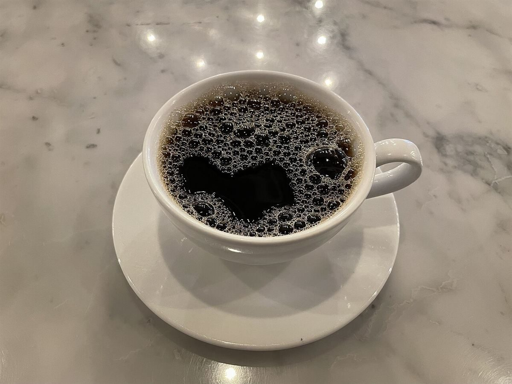

店のこと
店のこと
お店について確認できているのは、所在地・電話番号・Instagramのアカウントだけです。
確認できていること
- 店名は「CTS」、業種はカフェ(コーヒー)
- 所在地は福井県福井市照手1丁目10-20(〒910-0024)
- 電話番号は0776-22-5792
- Instagramは @cts_coffee_to_sand
- 営業時間・定休日・メニュー・価格・ご予約・駐車場は準備中

キーの読み替え表
C・T・Sのこと(制作側の遊び)
以下の読み替えは制作側の連想で、店名の由来ではありません。お店の理念・由来とは無関係です。
| C | Cup(カップ)。カップの写真を集めたキー |
|---|---|
| T | Table(卓)。卓の上の写真を集めたキー |
| S | Seed(豆)。コーヒー豆の写真を集めたキー |